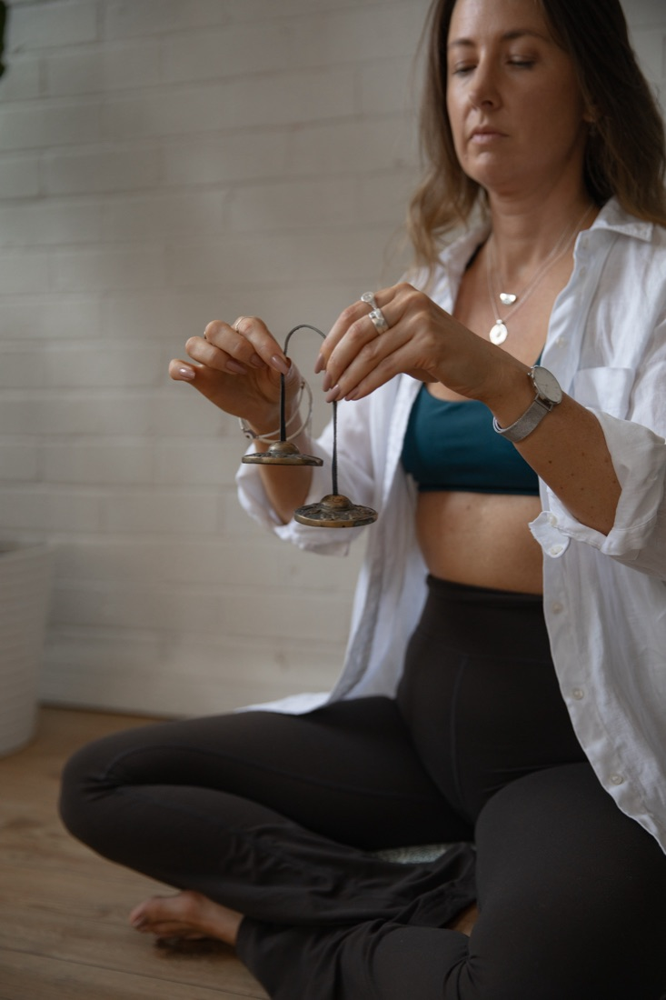

I've been meditating for more than 20 years and teaching for over six. In that time I've watched meditation go from something people were a little embarrassed to admit they did, to something that's on every wellness app, corporate calendar and magazine cover.
That's wonderful. But it's also brought some big promises: that meditation will fix anxiety, cure insomnia, make you a better leader and add years to your life. As someone who shares this practice every week, I think you deserve a more honest picture.

Where modern mindfulness began
Meditation has roots stretching back thousands of years. But much of the science we have today traces back to one person: Jon Kabat-Zinn.
In 1979, at the University of Massachusetts Medical School, he created Mindfulness-Based Stress Reduction (MBSR), an eight-week program combining mindfulness meditation, the body scan and gentle yoga. It was designed to help patients living with chronic pain, stress and illness, and it became the template that hundreds of research studies, and many workplace programs, have followed since.
His definition of mindfulness is still the one I come back to most. Mindfulness, he says, means
"paying attention in a particular way: on purpose, in the present moment, and non-judgmentally."
Jon Kabat-Zinn, Wherever You Go, There You AreIt's simple, but not always easy. And that's exactly why it takes practice.
Why I'm careful with the claims
In 2018, a group of 15 psychologists and neuroscientists reviewed the research on mindfulness and meditation. Their conclusion was sobering: much of the early research used small samples and weak designs, the effects were often smaller than the headlines suggested, and researchers don't even fully agree on what "mindfulness" means. They called for more honesty in how the benefits are described.1
That doesn't mean meditation doesn't work. It means we should be clear about what the evidence supports, and what it doesn't yet. So here's how I'd sum it up.
What the research supports well
It trains your attention
A well-known Harvard study found that our minds wander almost half the time, and that we tend to feel less happy while they're wandering.2 Meditation is, at its heart, attention training. In one study, just two weeks of mindfulness training reduced mind-wandering and improved working memory and test performance in university students.3
This is a big reason I bring short practices into workplaces. A few minutes of focused breathing before a meeting is a simple way to arrive with your full attention.
It can ease stress, anxiety and low mood
A major review of 47 randomised controlled trials, involving more than 3,500 people, found that mindfulness meditation programs led to small to moderate improvements in anxiety, depression and pain.4 Not a miracle, but a meaningful, measurable shift, and one that builds with regular practice.
It can grow kindness and connection
Loving-kindness and compassion meditations, where you deliberately send warm wishes to yourself and others, have been linked to more positive emotions, more compassion and stronger feelings of connection.5 I see this in group sessions all the time: a room of colleagues who share a few quiet minutes together often leaves a little softer with each other.
It may reduce some unconscious bias
In one experiment, people who listened to a short 10-minute mindfulness recording showed less unconscious bias based on race and age than a comparison group.6 It's early research, but it's a hopeful sign for teams working on inclusion.
What to keep in perspective
It's a support, not a cure
That same review of 47 trials found meditation programs weren't more effective than other active approaches like exercise or therapy.4 I always say meditation works best alongside other good habits and professional care, never instead of them. If you're living with a mental health condition, please keep working with your GP or mental health professional.
It isn't always calm and blissful
Sitting quietly with yourself can sometimes bring up difficult feelings or memories. A study that interviewed around 100 meditators and teachers found that challenging experiences such as fear, anxiety or feeling overwhelmed were more common than many people realise, and could happen to anyone.7
This is why I teach in a trauma-aware way. You're always free to open your eyes, move, adjust or take a break, and there's no "right" way to feel.
Making it work for you
Different practices do different things
Researchers who compared four styles of meditation found each had its own effect.8 A body scan increased awareness of the body and quietened busy thoughts. Loving-kindness boosted warmth towards others. Observing your thoughts increased awareness of your own thinking patterns.
So if you feel disconnected from your body, a body scan or yin practice might suit you. If there's tension in a team, loving-kindness can help. In my classes and corporate sessions, I choose practices to match what people need on the day.
There's no magic number
Researchers haven't yet agreed on how much meditation is "enough". My honest advice: little and often beats long and rare. Start with three to five minutes a day, notice how you feel before and after, and build from there.
Where to start
- On your own: try my free Grounding Root Chakra Meditation in the KIYA Library.
- With guidance: join a private session or one of my yin, sound and meditation events.
- With your team: I design workplace programs around what your people actually need, from five-minute desk resets to full wellbeing days.
"You can't stop the waves, but you can learn to surf."
Jon Kabat-ZinnMeditation won't fix everything. But practised regularly and kindly, it can change how you meet everything.
References
- Van Dam, N. T. et al. (2018). Mind the hype: A critical evaluation and prescriptive agenda for research on mindfulness and meditation. Perspectives on Psychological Science. Link
- Killingsworth, M. A. & Gilbert, D. T. (2010). A wandering mind is an unhappy mind. Science. Link
- Mrazek, M. D. et al. (2013). Mindfulness training improves working memory capacity and GRE performance while reducing mind wandering. Psychological Science. Link
- Goyal, M. et al. (2014). Meditation programs for psychological stress and well-being: A systematic review and meta-analysis. JAMA Internal Medicine. Link
- Hofmann, S. G., Grossman, P. & Hinton, D. E. (2011). Loving-kindness and compassion meditation: Potential for psychological interventions. Clinical Psychology Review. Link
- Lueke, A. & Gibson, B. (2015). Mindfulness meditation reduces implicit age and race bias. Social Psychological and Personality Science. Link
- Lindahl, J. R. et al. (2017). The varieties of contemplative experience. PLOS ONE. Link
- Kok, B. E. & Singer, T. (2017). Phenomenological fingerprints of four meditations. Mindfulness. Link
- Kabat-Zinn, J. (1990). Full Catastrophe Living: Using the Wisdom of Your Body and Mind to Face Stress, Pain, and Illness. Delacorte Press. (The original guide to MBSR.)
- Kabat-Zinn, J. (1994). Wherever You Go, There You Are: Mindfulness Meditation in Everyday Life. Hyperion.
This article is general information only and isn't a substitute for medical or mental health advice.